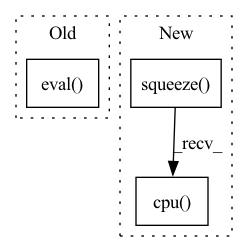

Pattern ID :23799
Before Change
_, sr = sf.read(path_list[0])
if speaker_embedding:
wav2mel = torch.jit.load("Models/SpeakerEmbedding/wav2mel.pt")
dvector = torch.jit.load("Models/SpeakerEmbedding/dvector-step250000.pt").eval()
ap = AudioPreprocessor(input_sr=sr, output_sr=16000, melspec_buckets=80, hop_length=256, n_fft=1024, cut_silence=cut_silences)
for path in tqdm(path_list):
transcript = self.path_to_transcript_dict[path]
wave, sr = sf.read(path)After Change
cached_speech = ap.audio_to_mel_spec_tensor(audio=norm_wave, normalize=False).transpose(0, 1).cpu().numpy()
cached_speech_len = torch.LongTensor([len(cached_speech)]).numpy()
if speaker_embedding:
cached_speaker_embedding = speaker_embedding_function.encode_batch(norm_wave).squeeze(0).squeeze(0).detach().cpu() .numpy()
process_internal_dataset_chunk.append([cached_text,
cached_text_len,
cached_speech,In pattern: SUPERPATTERN
Frequency: 3
Non-data size: 3
Instances Fragment ID: 74277997
Project Name: digitalphonetics/ims-toucan
Commit Name: 4705928bf2e8184d5b2bb1ef9dcc7213e398026d
Time: 2021-09-13
Author: florian.lux@ims.uni-stuttgart.de
File Name: TrainingInterfaces/Text_to_Spectrogram/Tacotron2/TacotronDataset.py
M Class Name: TacotronDataset
N Class Name: TacotronDataset
M Method Name: cache_builder_process(7)
N Method Name: cache_builder_process(7)
M Parent Class: Dataset
N Parent Class: Dataset
M File Name: TrainingInterfaces/Text_to_Spectrogram/Tacotron2/TacotronDataset.py
N File Name: TrainingInterfaces/Text_to_Spectrogram/Tacotron2/TacotronDataset.py
M Start Line: 83
M End Line: 98
N Start Line: 83
N End Line: 96
Before Change
segments_tensors = torch.ones_like(preprocessed_sentence)
with torch.no_grad():
self.sbiobert_model.eval()
encoded_layers, test = self.sbiobert_model(preprocessed_sentence, segments_tensors)
sentence_encoding = encoded_layers[-1].squeeze().mean(axis=0)
embedding = sentence_encoding.detach().cpu().numpy()
After Change
embedding = self.masked_mean(last_hidden_state,
preprocessed_sentence["attention_mask"])
return embedding.squeeze().cpu() .numpy()
def embed_many(self, preprocessed_sentences):
Compute the sentences embeddings for multiple sentences. Fragment ID: 74277998
Project Name: bluebrain/search
Commit Name: 6eb30c8b3e77791ee4e407dd19d7a5e08fe5e132
Time: 2020-09-04
Author: jankrepl@yahoo.com
File Name: src/bbsearch/embedding_models.py
M Class Name: SBioBERT
N Class Name: SBioBERT
M Method Name: embed(2)
N Method Name: embed(2)
M Parent Class: EmbeddingModel
N Parent Class: EmbeddingModel
M File Name: src/bbsearch/embedding_models.py
N File Name: src/bbsearch/embedding_models.py
M Start Line: 120
M End Line: 127
N Start Line: 193
N End Line: 197
Before Change
def generate_images(self):
self.G.eval()
self.D.eval()
with torch.no_grad():
z = torch.randn(self.prepare_number, self.G_input_size,1,1).to(self.device)
z = z.to(self.device)
After Change
if not os.path.exists(self.image_save_path):
os.makedirs(self.image_save_path)
fake_images = fake_images.mul(0.5).add(0.5).squeeze().cpu()
image_grid = utils.make_grid(fake_images, nrow=self.save_row_number)
Fragment ID: 74277995
Project Name: luzhixing12345/anime-wgan
Commit Name: c309bb95d35f7c02abc2db995b2d8f7cd07c68a9
Time: 2022-05-15
Author: luzhixing12345@163.com
File Name: model/BaseModule.py
M Class Name: BasicGAN
N Class Name: BasicGAN
M Method Name: generate_images(1)
N Method Name: generate_images(1)
M Parent Class: nn.Module
N Parent Class: nn.Module
M File Name: model/BaseModule.py
N File Name: model/BaseModule.py
M Start Line: 90
M End Line: 113
N Start Line: 87
N End Line: 98